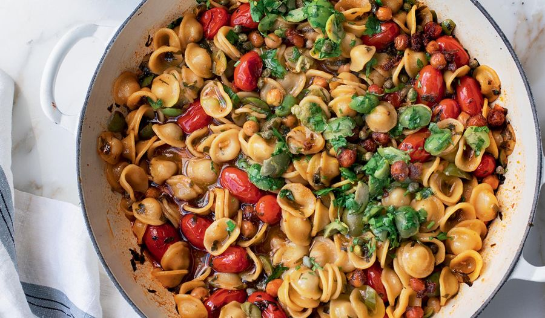

One-Pan Puttanesca

Ingredients
- 50 ml olive oil
- 6 cloves garlic, crushed
- 400g Chickpeas
- Lemon
- Parsley
Cooking Instructions
- Fry the chickpeas with the spices
- Crush the garlic and add to the pan
- Chop the parsley
- Add stock to the pan and bring to the boil
- Add the pasta and cook until al dent (12 or so minutes)
- Stir in the parsley and lemon juice
- Season with salt and pepper
Back to home